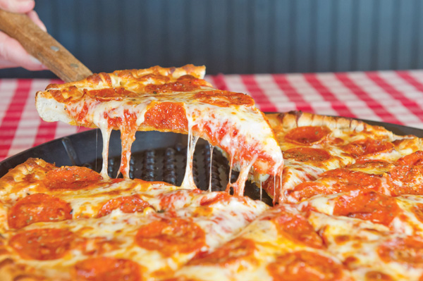

| Mini Project 1 | Mini Project 2 | Mini Project 3 | Mini Project 4 | Mini Project 5 | Mini Project 6 | Final Website |
|
My name is Sierra Ruiz and I am a 5th grade teacher for the North Olmsted City Schools. This is my seventh year teaching and I absolutely love what I do! I currently live in Medina, OH with my husband and our two cats. My husband and I met when we were juniors in high school and have been together ever since! We celebrated two years of marriage this past summer and plan to start a family sometime in the near future. When I am not teaching, I enjoy a variety of different activities including running, cooking and reading. Additionally, I enjoy trying traveling and trying new food |
| Food: Pizza | Store: Target | Dessert: Ice Cream |
|  | ||
| Animal: Cat | Sport: Gymnastics | Movie: Home Alone |
|